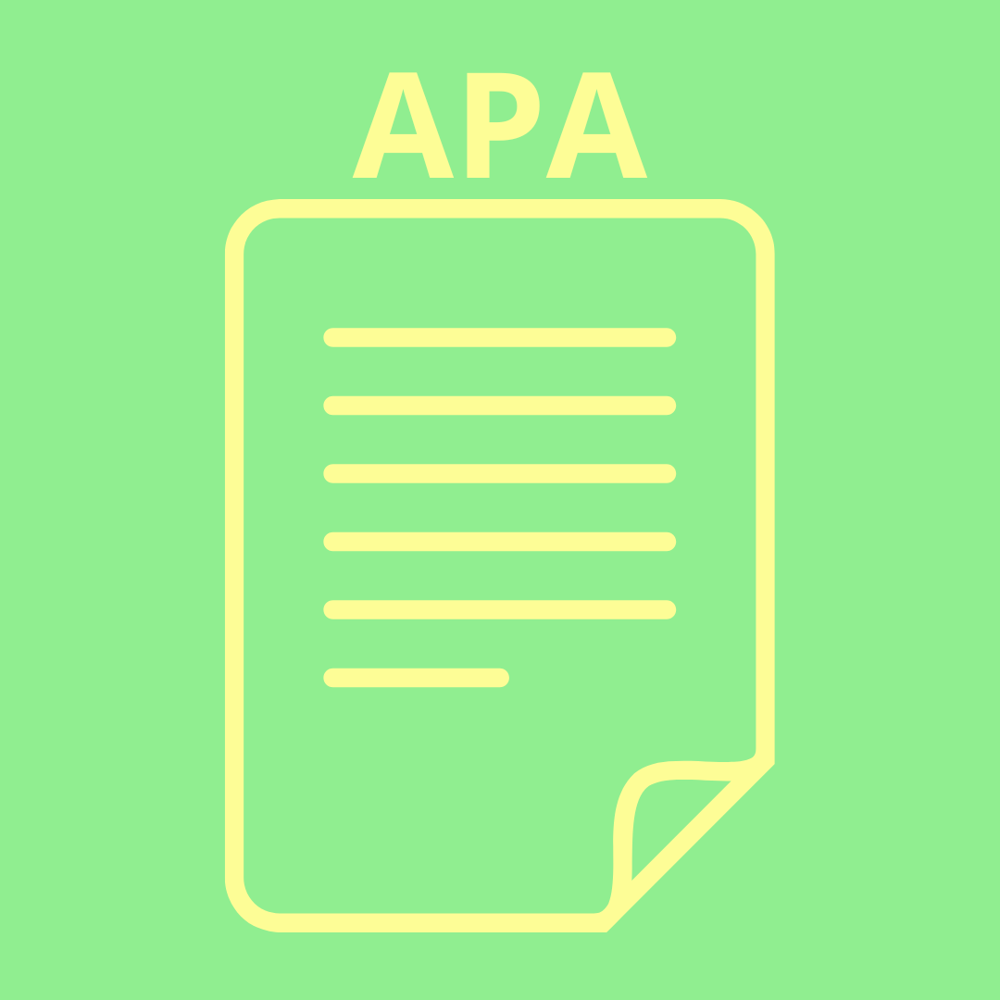
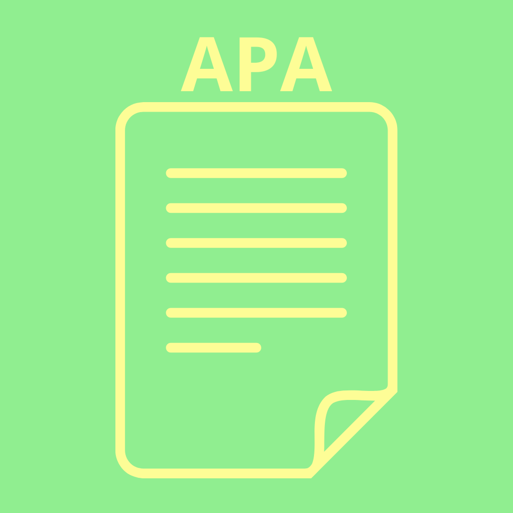

¿Qué podemos hacer para evitar los daños del calentamiento global?
|
El cambio climático para estos instantes ya es irreversible pero claro que podemos evitar que este siga creciendo de forma acelerada todos los dias. Esta es una lista de cosas que podemos demandarle nosotros como ciudadanos responsables a grandes empresas para evitar crear más daño:
- Que mejoren su eficiencia energética
- Que reduzcan la huella de carbono de sus productos, servicios y procesos
- Que establezcan metas para la reducción de las emisiones de carbono en consonancia con la climatología
- Que aumenten la inversión en el desarrollo de productos y servicios innovadores e inclusivos, climáticamente inteligentes y con bajo nivel de emisión de carbono
- Que se preparen para adaptarse al cambio climático y reforzando la resiliencia en sus operaciones, las cadenas de suministro y las comunidades en las que operan.
¿Y nosotros que podemos hacer nosotros?:
- Ahorrar energía en nuestras casas
- Empezar a caminar más, usar la bici o movernos en transportes públicos
- Empezar a comer más verduras y menos productos animales
- Consumir menos, reutilizar, reparar y reciclar!
- Elegir productos ecologicos
(United Nations, n.d.-a)
|
|

 
